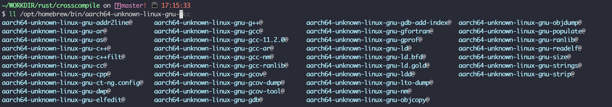
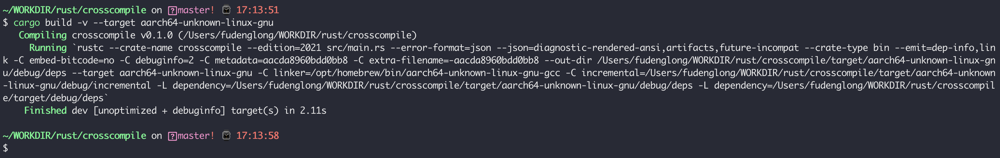
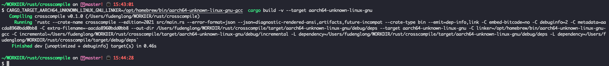

交叉编译就是跨平台编译，例如在 window 下编译程序的linux版本，或者在 x86_64 平台下编译 aarch64 版本。跨平台编译在Go语言中非常方便，得益于Go语言汇编器的设计。
本文展示如何在 Apple M1 的平台下编译 Linux aarch64 的应用程序。
Apple M1：
1 2 3 4 5 6 7 ~/WORKDIR/gamelife1314.github.io on source! ⌚ 13:15:25 $ uname -pvm Darwin Kernel Version 21.4.0: Fri Mar 18 00:46:32 PDT 2022; root:xnu-8020.101.4~15/RELEASE_ARM64_T6000 arm64 arm ~/WORKDIR/gamelife1314.github.io on source! ⌚ 13:15:38 $ gcc -dumpmachine arm64-apple-darwin21.4.0
linux aarch64：
1 2 3 4 5 ubuntu@vm-docker:~$ gcc -dumpmachine aarch64-linux-gnu ubuntu@vm-docker:~$ uname -pvm #40-Ubuntu SMP Mon Mar 7 08:06:10 UTC 2022 aarch64 aarch64 ubuntu@vm-docker:~$
在编译之前，我们需要在我们的工作平台，即 Mac 机器中，安装目的平台的标准库，我们可以通过 rustup target list 命令查看 rust 支持哪些平台架构，例如：
1 2 3 4 5 ~/WORKDIR/rust/helloworld ⌚ 12:52:32 $ rustup target list | grep aarch64 | grep linux aarch64-linux-android aarch64-unknown-linux-gnu (installed) aarch64-unknown-linux-musl
安装特定平台标准库使用 rustup target add 命令即可:
1 2 3 4 5 ~/WORKDIR/rust/helloworld ⌚ 13:21:34 $ rustup target add --toolchain stable aarch64-unknown-linux-gnu info: downloading component 'rust-std' for 'aarch64-unknown-linux-gnu' info: installing component 'rust-std' for 'aarch64-unknown-linux-gnu' 34.9 MiB / 34.9 MiB (100 %) 18.1 MiB/s in 1s ETA: 0s
安装成功之后，通过 rustup show 命令查看本地已安装的工具链和标准库：
1 2 3 4 5 6 7 8 9 10 11 12 13 14 15 16 17 18 19 20 21 22 23 24 ~/WORKDIR/rust/helloworld ⌚ 13:22:11 $ rustup show Default host: aarch64-apple-darwin rustup home: /Users/fudenglong/.rustup installed toolchains -------------------- stable-aarch64-apple-darwin beta-aarch64-apple-darwin nightly-aarch64-apple-darwin (default) installed targets for active toolchain -------------------------------------- aarch64-apple-darwin aarch64-unknown-linux-gnu x86_64-unknown-linux-gnu active toolchain ---------------- nightly-aarch64-apple-darwin (default) rustc 1.62.0-nightly (e745b4ddb 2022-04-07)
要编译 aarch64-linux-gnu 平台下的程序，就需要特定平台的编译器，这个项目中提供了MAC环境下用于交叉编译的工具，更多请看 https://github.com/messense/homebrew-macos-cross-toolchains 。
使用 brew 安装非常简单，两条命令即可，耐心等待安装完成:
1 2 brew tap messense/macos-cross-toolchains brew install aarch64-unknown-linux-gnu
经过这里之后，我们可以看到我们将所需要的 linux-aarch64 下的工具链都安装下来了：

使用 cargo 命令快速创建一个项目进行测试:
1 2 3 4 5 6 7 8 9 10 11 12 13 ~/WORKDIR/rust ⌚ 13:27:16 $ cargo new crosscompile Created binary (application) `crosscompile` package ~/WORKDIR/rust ⌚ 13:27:50 $ cd crosscompile ~/WORKDIR/rust/crosscompile on master! ⌚ 13:27:58 $ cargo run Compiling crosscompile v0.1.0 (/Users/fudenglong/WORKDIR/rust/crosscompile) Finished dev [unoptimized + debuginfo] target(s) in 0.59s Running `target/debug/crosscompile` Hello, world!
我们需要配置 cargo 编译时使用的链接器，在配置文件 .cargo/config 中添加如下配置:
1 2 3 4 5 6 7 ~/WORKDIR/rust/crosscompile on master! ⌚ 17:15:21 $ ll .cargo/config -rw-r--r-- 1 fudenglong staff 94B 4 8 17:13 .cargo/config ~/WORKDIR/rust/crosscompile on master! ⌚ 17:15:25 $ cat .cargo/config [target.aarch64-unknown-linux-gnu] linker = "/opt/homebrew/bin/aarch64-unknown-linux-gnu-gcc"
然后我们执行特定编译命令 cargo build -v --target aarch64-unknown-linux-gnu：

我们也可以使用环境变量配置所需要的链接器，环境变量的形式是：CARGO_TARGET_<triple>_LINKER，这里的 triple 就是我们目标 target，只不过要转换成大写，并且替换 - 为 _，例如:
CARGO_TARGET_AARCH64_UNKNOWN_LINUX_GNU_LINKER=/opt/homebrew/bin/aarch64-unknown-linux-gnu-gcc cargo build -v --target aarch64-unknown-linux-gnu

在下面的目录下能找到编译之后的二进制文件：
1 2 3 4 5 6 7 8 9 10 ~/WORKDIR/rust/crosscompile on master! ⌚ 17:22:58 $ ll target/aarch64-unknown-linux-gnu/debug total 7880 drwxr-xr-x 2 fudenglong staff 64B 4 8 17:13 build -rwxr-xr-x 1 fudenglong staff 3.8M 4 8 17:13 crosscompile -rw-r--r-- 1 fudenglong staff 153B 4 8 17:13 crosscompile.d drwxr-xr-x 4 fudenglong staff 128B 4 8 17:13 deps drwxr-xr-x 2 fudenglong staff 64B 4 8 17:13 examples drwxr-xr-x 3 fudenglong staff 96B 4 8 17:13 incremental
然后去linux下运行也是没有问题的：
1 2 3 4 5 6 7 8 9 10 11 12 13 14 15 16 17 18 19 20 21 22 23 24 25 26 27 28 ubuntu@vm-docker:~/workdir$ uname Linux ubuntu@vm-docker:~/workdir$ uname -a Linux vm-docker 5.13.0-35-generic #40-Ubuntu SMP Mon Mar 7 08:06:10 UTC 2022 aarch64 aarch64 aarch64 GNU/Linux ubuntu@vm-docker:~/workdir$ readelf -h crosscompile ELF Header: Magic: 7f 45 4c 46 02 01 01 00 00 00 00 00 00 00 00 00 Class: ELF64 Data: 2's complement, little endian Version: 1 (current) OS/ABI: UNIX - System V ABI Version: 0 Type: DYN (Position-Independent Executable file) Machine: AArch64 Version: 0x1 Entry point address: 0x6720 Start of program headers: 64 (bytes into file) Start of section headers: 4025296 (bytes into file) Flags: 0x0 Size of this header: 64 (bytes) Size of program headers: 56 (bytes) Number of program headers: 10 Size of section headers: 64 (bytes) Number of section headers: 44 Section header string table index: 43 ubuntu@vm-docker:~/workdir$ ./crosscompile Hello, world! ubuntu@vm-docker:~/workdir$
交叉编译的直接需求就是你得找到一款合适的编译器，能编译出特定平台架构下的二进制程序。
macos->windows：Macos 平台linux和windows交叉编译器 linuxARM compiler for LinuxX86 System
Rust Cross-Compilation with Cargo and Rustup toolchain manager 如何在Mac上为Linux交叉编译Rust程序 Rust交叉编译Mac编译Linux/Windows平台 Macos 平台linux和windows交叉编译器